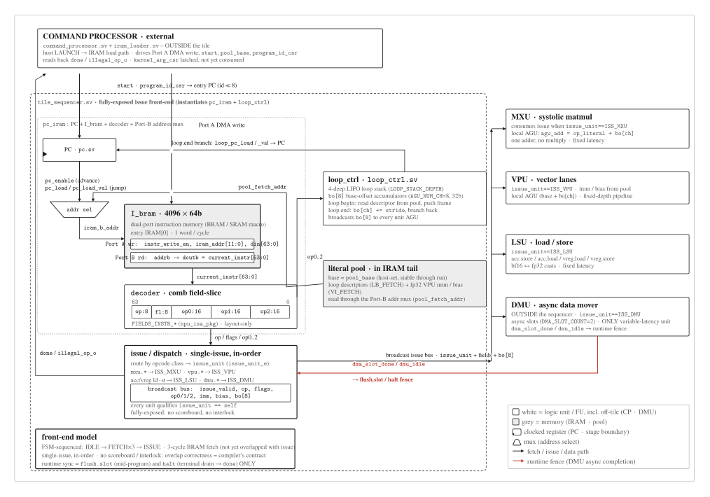
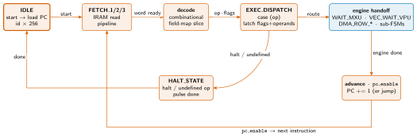

Sequencer: The Control Path¶
The sequencer is the compute tile's control unit: it owns the program counter, the instruction RAM, and the decoder, and dispatches each fetched instruction to the right engine (MXU / VPU / DMA) or control sub-FSM. This document zooms in from the sequencer's place in the control plane, to the fetch → decode → dispatch → engine handoff lifecycle, to the 64-bit instruction word and the opcode-group fan-out of EXEC_DISPATCH. The exhaustive opcode-to-case table is not reproduced here --- it is the RTL itself (tile_sequencer.sv + mininpu/isa); this document cites it.
The sequencer in context¶
The sequencer's place in the device (the command processor's launch path) is described on the uncore; its place in the tile's module tree is drawn in Compute tile Fig. 3. The whole-device context is drawn in Lab 0 Fig. 1.
The host rings a doorbell over AXI-Lite. The CP decodes a LAUNCH descriptor (active v1 fields: kbin_addr:64, kbin_size:32; no runtime kernargs in v1, operand addresses are compile-baked immediates), loads the kernel binary from devmem[kbin_addr, kbin_size] into tile IRAM, and pulses start; completion is instr_ready (combinational all-idle flag). The sequencer owns the program counter (pc.sv), the IRAM (4096 × 64-bit), and the combinational decoder (decoder.sv). On each instruction it fans out from EXEC_DISPATCH to one engine --- MXU or VPU (via vpu_ctrl) --- or the tile's DMU (driven by the DMA_ROW_* sub-FSM), or a control sub-FSM (loop / flush.slot / halt). Each engine's done pulse drives pc_enable and the next fetch begins.

Fig. 1.Sequencer datapath, IRAM to issue. The structural spine behind the FSM. The
dual-port I_bram (4096 × 64b) streams one 64-bit word per cycle into the
combinational decoder, which field-slices it by the layout-only FIELDS_INSTR_*
(npu_isa_pkg). Single-issue, in-order dispatch then routes by opcode class to the
issue_unit: mxu.* → ISS_MXU, vpu.* → ISS_VPU, acc/vreg ld·st → ISS_LSU,
dmu.* → ISS_DMU. Every unit qualifies issue_unit == self; the path is
fully-exposed, with no scoreboard and no interlock.
Fetch → decode → dispatch lifecycle¶

Fig. 2.Sequencer FSM: the instruction lifecycle. Drawn from tile_sequencer.sv,
the top FSM tile_top instantiates. IDLE arms and loads the PC on start;
FETCH_1/2/3 pipelines the 3-cycle IRAM read; ISSUE decodes and dispatches by opcode.
A unit op or loop.end issues and returns to FETCH_1 the same cycle (fully exposed:
no per-engine wait state). loop.begin detours through LB_FETCH_REQ/WAIT/COMMIT to read
the loop descriptor from the pool; flush.slot spins in FLUSH_WAIT until the masked DMA
slots retire; halt (or an illegal opcode) drains in HALT_DRAIN until dmu_idle, pulses
done, and returns to IDLE.
The top FSM (tile_sequencer.sv) has 10 states (the seq_state_t enum is logic [3:0], 10 of 16 used). The common path is a short loop: start loads the PC, FETCH_1/2/3 pipelines the IRAM read so the word is stable, the combinational decoder (inside pc_iram) slices the field map, and ISSUE dispatches by opcode. A compute op is fully exposed: it issues and advances the PC the same cycle it reaches ISSUE, with no per-engine wait state (tile_top qualifies the broadcast issue bus into the addressed engine's enable). Specialized opcodes take a detour through a sub-FSM and rejoin at FETCH_1: loop.begin reads its descriptor from the literal pool (LB_FETCH_REQ/WAIT/COMMIT), flush.slot fences in FLUSH_WAIT, and halt drains in HALT_DRAIN (returning to IDLE). Fetch is not yet overlapped with issue; a TODO in the RTL flags the 1-instruction/cycle steady state as future work.
Deeper dive: the FSM reset / NBA-race pitfall
From the RTL pitfall taxonomy (bring-up and timing closure). FSM state-machine
timing: in a sequencer FSM, reset and non-blocking-assignment (NBA) races are a
recurring trap --- keep the explicit else-branch on every state transition so the
last-NBA-wins semantics resolve deterministically, and drive derived control off the
registered handshake rather than a combinational decode of it. The specific warning
lives as an inline comment at its exact code site in tile_sequencer.sv; this is the class,
not the instance. The whole taxonomy is kept intact on the
compute-tile overview.
Lifecycle stages¶
Stage by stage, from doorbell launch to PC advance:
Table: lifecycle stages, from doorbell launch through engine handoff to PC advance.
| Stage | State(s) | What happens |
|---|---|---|
| Start | IDLE -> FETCH_1 |
On start, the PC is loaded to the kernel entry point (program_id << PROGRAM_SLOT_SHIFT). The CP has already loaded the kernel binary into IRAM (devmem[kbin_addr, kbin_size] → IRAM); the LAUNCH descriptor carries the devmem base address and size, not a slot index or registry handle. |
| Fetch | FETCH_1 / 2 / 3 |
3-cycle pipeline that lets the IRAM read settle before decode is stable. The PC drives the IRAM port-B address; the 64-bit word arrives three cycles later. |
| Decode | (combinational, in pc_iram) |
decoder.sv slices the word into op · flags · op0 · op1 · op2 per the FIELDS_INSTR_* layout. Layout-only; per-opcode meaning is applied at issue. |
| Dispatch / issue | ISSUE |
A case (op) classifies the opcode. A unit op asserts issue_valid / issue_unit on the broadcast issue bus and advances the PC the same cycle (fully exposed): the sequencer does not wait on an engine done, so there is no WAIT_* state. tile_top qualifies the bus into the addressed engine's enable. |
| Detours | LB_FETCH_REQ/WAIT/COMMIT, FLUSH_WAIT, HALT_DRAIN |
The four non-unit opcodes leave the same-cycle path: loop.begin pool-reads the loop descriptor, flush.slot fences the masked DMA slots, halt (and any illegal opcode) drains the DMU. loop.begin and flush.slot rejoin at FETCH_1; halt pulses done and returns to IDLE. |
| Advance | pc_enable / pc_load |
The PC increments (unit op, loop.end fall-through) or jumps (loop.end branch to body start), returning to FETCH_1. |
Decode field map --- the 64-bit instruction word¶
The 64-bit instruction word the decoder slices is ISA Fig. 2; the ISA Contract owns the encoding.
The decoder mirrors the instruction layout in mininpu/isa (and npu_isa_pkg.sv FIELDS_INSTR_*). One 64-bit word splits into a 8-bit opcode, 8-bit flags, and three 16-bit operands:
Table: instruction word fields; bit positions are the SSOT in mininpu/isa (FIELDS_INSTR_*) → npu_isa_pkg.sv.
| Field | Bits | Role |
|---|---|---|
opcode |
[63:56] | 8-bit operation selector (dispatch key) |
flags |
[55:48] | 8-bit per-instruction flags; flags[7:6] = reserved-must-be-zero (dtype removed from v1 encoding; BF16 hardwired; parked/re-claimable); other bits: transB / accum / causal / async |
op0 |
[47:32] | 16-bit operand 0 (dest row / VREG / mask) |
op1 |
[31:16] | 16-bit operand 1 (src row / pool index) |
op2 |
[15:0] | 16-bit operand 2 (row count / scalar / packed args) |
Wide immediates (DRAM addresses, fp32 scalars, loop bounds) do not fit in a 16-bit operand: an operand field instead carries a literal-pool index, and the sequencer's unified pool-fetch sub-FSM (POOL_FETCH_REQ / WAIT) reads the value from IRAM at pool_base + index + step before continuing.
Under owner review: where the literal pool physically lives
This page reads pool entries "from IRAM"; the ISA spec instead calls the literal pool (LPM) an "on-chip constant / param RAM in the tile sequencer ... NOT devmem, NOT SPAD" (isa.md LPM row). This docs-vs-docs sequencer-design contradiction is under owner review; the parallel DMU/sequencer work may settle it, so this note flags it without picking a winner.
EXEC_DISPATCH fan-out by opcode group¶
The opcode's high nibble names its group; EXEC_DISPATCH routes by group to one of four targets --- MXU, VPU, the LSU, or the DMU --- or a control sub-FSM. The nibble map is the SSOT in mininpu/isa: 0x0_ matmul group (mxu.load.w / mxu.matmul) to the MXU, 0x1_ / 0x2_ vector ops (vpu.*) to the VPU, 0x3_ register load/store (acc.store / vreg.load / vreg.store) to the LSU (the SPAD-VREG mover, cross-ref spad.md :: The LSU), 0x4_ DMU, 0x5_ control (halt at 0x5F). Register load/store is dispatched to the LSU, not owned by the VPU, under the 0.5.0 model; the as-built RTL still routes the 0x3_ ops through vpu_ctrl (VEC_WAIT_VPU). This section shows the routing, not the per-opcode case table --- that is the dispatch body in tile_sequencer.sv.
Table: EXEC_DISPATCH opcode-group routing; exact opcode values and per-case operand decoding are the SSOT in mininpu/isa.
| Group | Opcode range | Routed to |
|---|---|---|
mxu.load.w / mxu.matmul (flags[7:6] reserved) |
0x00, 0x01 | MXU → WAIT_MXU |
| VEC / reductions on ACC ↔ VREG [v1] | 0x10--0x1D | vpu_ctrl → VEC_WAIT_VPU |
| VEC VREG-only (0x26/0x27 [v1]; 0x20--0x25/0x28--0x2A [serving]-reserved) | 0x20--0x2A | vpu_ctrl → VEC_WAIT_VPU |
| Register load/store (SPAD bf16 ↔ ACC/VREG fp32) | 0x30--0x32 | LSU (0.5.0 model; see spad.md :: The LSU) · as-built routes via vpu_ctrl → VEC_WAIT_VPU |
| DMU load/store [v1] | 0x40, 0x42 | DMA_ROW_* |
DMU paged .mi ([serving]-reserved) |
0x48 / 0x4C | (reserved; no impl on main) |
| Loop control [v1] | 0x50, 0x51 | POOL_FETCH / LOOP_END_EXEC |
loop.begin.csr ([serving]-reserved) |
0x55 | (reserved; no impl on main) |
Async-DMA fence [v1] (flush.slot) |
0x53 | FLUSH_SLOT_WAIT (SPAD-only, masked) |
Halt (halt) |
0x5F | HALT_STATE → drain DMA → done → IDLE |
Worked example --- mxu.matmul from fetch to MXU handoff¶
Take one concrete word, 0x0102 0000 0008 0040. The decoder slices it layout-only
into the five fields; EXEC_DISPATCH then applies meaning. The high byte 0x01 is
mxu.matmul, whose high nibble 0x0_ names the matmul group, so dispatch routes
to the MXU (as-built: enters WAIT_MXU). flags=0x02 sets the causal bit
(flags[1]); op0=0x0000 is the ACC-out row and op1=0x0008 the activation
(spm_x) source row, with the weights already preloaded into the inactive buffer by
a preceding mxu.load.w (which switches in on this op). The MXU consumes the
operands, runs the tile, and pulses systolic_done, which drives pc_enable. What
happens inside the MXU after the handoff --- the systolic wavefront and the ACC
drain --- is MXU Fig. 3. These values are illustrative ---
the authoritative opcode/flag/operand encodings live in mininpu/isa.
Loop control --- hardware loops¶
Hardware loops avoid host round-trips for tiled kernels. The sequencer holds four independent induction variables (IVs).
loop.begin(0x50): pushes a loop frame --- latches IV id, step, lo (initial IV), and the loop body's start PC; thehibound is read from the literal pool. (loop.begin.csr0x55 would sourcehifrom a kernel-arg CSR; it is [serving]-reserved and not implemented on main.)loop.end(0x51): inLOOP_END_EXEC,IV += step; ifIV < hithe PC jumps back to the body start, else it falls through. The compare/increment is combinational (iv_reg_next).
Loop bounds are literal-only by ISA design --- they are not computed from runtime data; this keeps the IRAM-patch (pool) loop bounds statically known to the assembler.
Flush & halt¶
flush.slot(0x53): the sole async-DMA fence --- spins inFLUSH_SLOT_WAITuntil every SPAD-region slot in the op0 mask reportsdma_slot_done, then clears those done bits for reuse (make-async-real). Because the DMU touches SPAD only, this fence guards SPAD regions only. The former full-fenceflush(0x52) opcode is retired; the assembler pseudoflushnow lowers toflush.slotover all slots.halt(0x5F): the only terminator. It sits at the all-ones lower-nibble slot (a clean default-to-halt decode) and drains all outstanding DMA slots before assertingdone("done" = results committed); any undefined opcode also defaults toHALT_STATE. (Ratified 0.4.0 value; the current RTL still homes halt at 0x3F and does not yet drain, tracked as a separate RTL fix.)
TODO(figure): pipeline / overlap Gantt chart
A house-style Gantt / space-time chart belongs here, showing how the async
DMA (DMA_ROW_* slots) overlaps transfer with compute across loop iterations:
the DMU fills one SPAD region with the next tile while the compute path reads the
tile already resident in the other region, with flush.slot as the fence that
swaps the two regions between iterations. This is the double-buffering overlap the
retired ct-pingpong figure sketched; it wants a redraw as a proper per-cycle
Gantt view (family fig-timing) rather than the block diagram it was. Not drawn
yet: this is a placeholder, not a figure embed.
Scalar unit (proposed)¶
Status: PROPOSED --- not implemented
The scalar unit, its three opcodes, and the 0x55 wiring below are a design
proposal, not as-built RTL. None of it exists on rtl/s2-spine (#418) or on silicon.
It is documented here, in the tile front-end page, because it is a sub-module
extension of tile_sequencer.sv --- the module this page describes --- not a separate
unit. Where it touches live logic (the loop-frame addressing path, the VREG/SPAD port
guards) that is called out explicitly: those are changes to active code, not deletion
of dead code.
The tile front-end is structurally a TensorCore-style front-end (a VPU + a flat-1D VREG file + a systolic MXU + an async DMU + a counted-loop controller) with the scalar compute unit stripped out: there is no scalar ALU and no writable scalar register file. Every run-time scalar today is a compile-time literal (the literal pool), so the program runs autonomously to halt with no path from a computed value to a memory address. That is fine for dense forward inference, where every address is compile-known. It breaks for Paged Attention, whose KV loop is a counted loop over n_blocks but whose per-block address is looked up at run time from a block table. That is data-dependent addressing, not data-dependent control --- a distinction that shapes the rest of this proposal.
The scalar unit is the minimal fix: a small writable scalar register file plus three scalar opcodes that let a kernel compute an address at run time.
Proposed ISA delta¶
Three opcodes in the free 0x6_ nibble plus wiring one already-declared control opcode. The 0x6_ nibble is entirely unassigned on #418 (mininpu/isa/opcodes.py: no OP_* = 0x6x), so this claims fresh space and collides with nothing.
Table: proposed scalar opcodes. ALL PROPOSED --- none exist in the RTL or on silicon.
| op | opcode | semantics | note |
|---|---|---|---|
scalar.movi |
0x62 |
sreg[dst] = imm32 |
immediate inline in op1:op2 |
scalar.load |
0x60 |
sreg[dst] = spad_row[lane] |
the one genuinely new datapath: a new SPAD/VREG read-port client + a lane mux |
scalar.mac |
0x61 |
sreg[dst] += sreg[src] * imm16 |
dst = accumulator so the RF stays 2R1W |
The scalar.mac dst = accumulator convention is deliberate: holding the write set to a single accumulator destination keeps the scalar RF at 2-read / 1-write, matching the VREG file's 2r1w shape (vreg_rf.sv) and avoiding a wider (more area/timing-costly) file.
Wire loop.begin.csr (0x55). OP_LOOP_BEGIN_CSR = 0x55 is declared but not dispatched on #418: it lives in the ISA SSOT (opcodes.py:543) and in the RESERVED frozenset (opcodes.py:710), with no encoder (encoders.py has no loop_begin_csr), so it currently traps to the illegal-opcode / halt default. The proposal wires it as loop.begin with hi sourced from a scalar slot instead of a pool literal --- a runtime-bounded counted loop with no new opcode. (The SSOT declaration phrases the source as hi = KERNEL_ARG[op1]; that kernel-arg CSR does not exist on #418, so the writable scalar RF proposed here is the source that would make 0x55 dispatchable.)
Addressing --- generalize the live loop-frame path¶
The affine-index / stride datapath is live on #418, not inert --- so this is a change to active logic, not a "retire the dead AGU". The loop controller reads a per-channel stride vector from the pool and accumulates it into per-channel base-offset (bo) registers:
tile_sequencer.sv:230wires the reallb_desc_stridesignal intoloop_ctrl'sdesc_strideport;tile_sequencer.sv:500latches each per-channel stride word from the literal pool.loop_ctrl.svaccumulates it: on eachloop.endCONTINUE,bo <= bo + active_stride(loop_ctrl.sv:174), and the unit AGUs form each operand address asoperand_literal + bo[ch](a single add, no multiply). This tracksbase + iter*strideexactly.
The scalar unit generalizes this live path: today bo advances by a compile-time stride vector per loop frame; the scalar unit lets scalar.mac / scalar.load compute the offset (or a full base) at run time --- e.g. a block-table gather --- and feed it into the same operand-address formation. It should eventually subsume the loop-frame stride source, but that is a migration of a working feature (tested against the existing bo oracle --- the 32×32 GELU stride vectors at loop_ctrl.sv:44-46), not a removal of dead code. The counted-stride case stays; the scalar path is its runtime-computed superset.
Port budget --- a new client under the existing guard contract¶
scalar.load reads a SPAD (or VREG) row, so it is a new read-port client, and #418 already has a built, enforced port-arbitration contract it must plug into --- SPAD/VREG port arbitration is not unexplored here:
- The VREG file is
2r1w(vreg_rf.sv, with a documented future2r2whook).tile_top.svstatically assigns read-port A (MXU X-burst vs VPU src-A) and read-port B (LSU vs VPU src-B) with no hardware arbiter --- temporal separation by compiler contract (tile_top.sv:29-37). - Each client raises a per-cycle read-request qualifier:
mxu_vreg_rd_enandlsu_vreg_rd_en(tile_top.sv:218,342, wired to the submodules'vreg_rd_enports). Sim-only guards fire$errorwhen a client requests a port the mux granted elsewhere (tile_top.sv:454-472, exercised bydv/compute_tile/test_vreg_port_hazard.py). - The SPAD compute port (Port B) is a static priority mux MXU > LSU > VPU (
tile_top.sv:37,479) and is already oversubscribed; its over-subscription guard (tile_top.sv:509-523) is a real, tracked contract-violation detector (dv/compute_tile/test_port_guards.py).
So a scalar.load client must take a defined slot in this static assignment (its own per-cycle enable + a co-issue / hazard rule the compiler honors) or wait for the 2r2w upgrade. The open question is which port and under what co-issue rule, not whether arbitration exists.
Build as a sub-module of tile_sequencer.sv¶
Implement the scalar unit as sub-module additions inside the existing front-end (tile_sequencer.sv), not as a rename or supersede of it. tile_sequencer.sv is the actively-reworked live front-end (the flat-1D VREG rework, #418); a supersede buys ~0 RTL simplification (the real simplification is the scalar-unit content itself, which lands under either name) at maximum coordination cost on a contested in-flight file. The sub-module adds: the writable scalar RF, the three 0x6_ ops, the scalar.load port client, and the 0x55 wiring.
Keep the counted-loop primitive¶
Paged Attention needs data-dependent addressing, not data-dependent control, so the counted loop stays:
- Keep
loop.begin/loop.end(0x50/0x51). The LIFO loop stack is a cheapSTACK_DEPTH = 4structure (loop_ctrl.sv:58; frame storageloop_ctrl.sv:99-104). No new control opcode is needed for the counted KV loop. - A writable scalar RF as the runtime-bound source.
0x55sourcinghifrom a scalar slot gives a runtime-bounded counted loop, replacing a staticloop.beginone-for-one. - Cross-lineage caveat: a param-CSR / arg-mode file (a launch-preloaded writable CSR) is sometimes proposed as the scalar source. That is a feature of the arg-mode lineage, NOT present on #418 (no
param_csr, no arg-mode onrtl/s2-spine; the two lineages are divergent, not ancestor/descendant). Treat it as a cross-lineage dependency to reconcile, not an as-built fact to build on. - Defer a general data-dependent branch. Neither dense forward nor Paged Attention needs one (no early-exit /
while), so it stays deferred until a workload requires data-dependent control.
Open prerequisite --- confirm ACC writeback on #418 silicon¶
scalar.mac's dst = accumulator path depends on ACC writeback being correct. On the arg-mode bitstream (build_id 0xB1000208) the ACC-writeback path showed a row-dependent silicon bug (acc.store did not correctly write its SPAD destination; row 8 → garbage, row 64 → zero, MEASURED; ledger #73), with sim passing and silicon failing. #418 may already fix this: it unifies row addressing from concat to a flat base + ADD in both lsu.sv:189 (vreg_wr_addr = vreg_id_q + wr_row_q) and mxu.sv (vreg_rd_addr = vreg_x_id + row), a plausible root cause for a row-dependent writeback fault. This is static analysis only --- #418 has no silicon yet --- so it is a prerequisite to confirm on an rtl/s2-spine bitstream re-measure, not a hard blocker and not a claimed fix.
Scalar-unit sources¶
Table: authoritative sources for the scalar-unit proposal, verified against #418 (rtl/s2-spine).
| Concern | Source (#418 / rtl/s2-spine) |
|---|---|
| Front-end module (extension target) | npu/src/compute_tile/tile_sequencer.sv |
Live loop-frame stride / bo accumulators |
tile_sequencer.sv:230,500 · loop_ctrl.sv:44-46,174 |
LIFO loop stack, STACK_DEPTH=4 |
loop_ctrl.sv:58,99-104 |
Free 0x6_ nibble; 0x55 declared-not-dispatched |
mininpu/isa/opcodes.py (no 0x6x; 0x55 at :543, RESERVED at :710); mininpu/isa/encoders.py (no loop_begin_csr) |
VREG 2r1w (+ future 2r2w hook); flat-1D base+ADD addressing |
vreg_rf.sv · lsu.sv:189 · mxu.sv |
| Port guards / per-cycle read enables | tile_top.sv:29-37,218,342,454-472,479,509-523 · dv/compute_tile/test_port_guards.py · dv/compute_tile/test_vreg_port_hazard.py |
| ACC-writeback silicon bug (arg-mode bitstream, to re-measure on #418) | ledger #73 (build_id 0xB1000208) |
Planned evolution → RISC-V control core(s)¶
The current hand-rolled FSM is the present control design. The command processor (command_processor.sv) is a persistent device unit that the host API drives in all versions via LAUNCH descriptors; a control MCU is an orthogonal complexity lever, not a version milestone. The per-tile FSM sequencer stays. Per GitHub issue #109, the per-tile EXEC_DISPATCH FSM is also a candidate for replacement by a small RISC-V control core once the RTL stabilizes. A programmable core fits the composable-IP template vision (#108) better than a bespoke FSM; ISA dispatch now hardwired in EXEC_DISPATCH would move to CPU-driven control. The ISA SSOT (mininpu/isa) and the DV ISA-coverage gate would retarget accordingly. Sequencing: after the current RTL stabilizes, not urgent.
Deeper dive: on-chip control-core progression in contemporary NPUs
Contemporary discrete NPUs illustrate the host-CP-to-on-chip-core progression this section anticipates. Tenstorrent Tensix: each core carries 5 RISC-V "baby cores" (one data-in, one data-out, three driving UNPACK / MATH / PACK) plus SRAM and dual routers on a 2D-torus NoC; Blackhole adds "big" RISC-V cores that manage their own data movement without host round-trips --- exactly the host-CP to on-chip-MCU step in mininpu's roadmap. Meta MTIA v2: an 8x8 grid of 64 PEs, each PE a dual RISC-V (scalar control + vector) coordinating functional blocks, with an on-chip L2 staging tier and LPDDR5 off-chip device memory. These validate the RISC-V-per-tile control model at scale; whether to adopt it here is a complexity/scalability judgement, not a version milestone.
Sources¶
This document cites; it does not restate the opcode-to-case table. Authoritative sources:
Table: authoritative sources by concern; this document cites rather than restates the opcode-to-case table.
| Concern | Authoritative source |
|---|---|
Top FSM, EXEC_DISPATCH, sub-FSMs, pool fetch |
npu/src/compute_tile/tile_sequencer.sv |
| Instruction field slicing | npu/src/compute_tile/decoder.sv (mirrors FIELDS_INSTR_*) |
| Program counter (load / advance) | npu/src/compute_tile/pc.sv |
| Chip-level launch / doorbell arbitration | npu/src/npu/compute_ctrl.sv · npu.sv |
| Opcodes, group nibble map, field map, flags, literal pool | mininpu/isa |
Field positions (FIELDS_INSTR_*), flag bits |
npu/src/npu/npu_isa_pkg.sv |
Constants (IRAM_DEPTH=4096, INSTR_WIDTH=64, IRAM_ADDR_WIDTH=12) |
npu/src/npu/npu_config_pkg.sv |
| Tile context | compute-tile overview · uncore · README.md |
Dispatch specifics live in npu/src/compute_tile/tile_sequencer.sv + mininpu/isa.